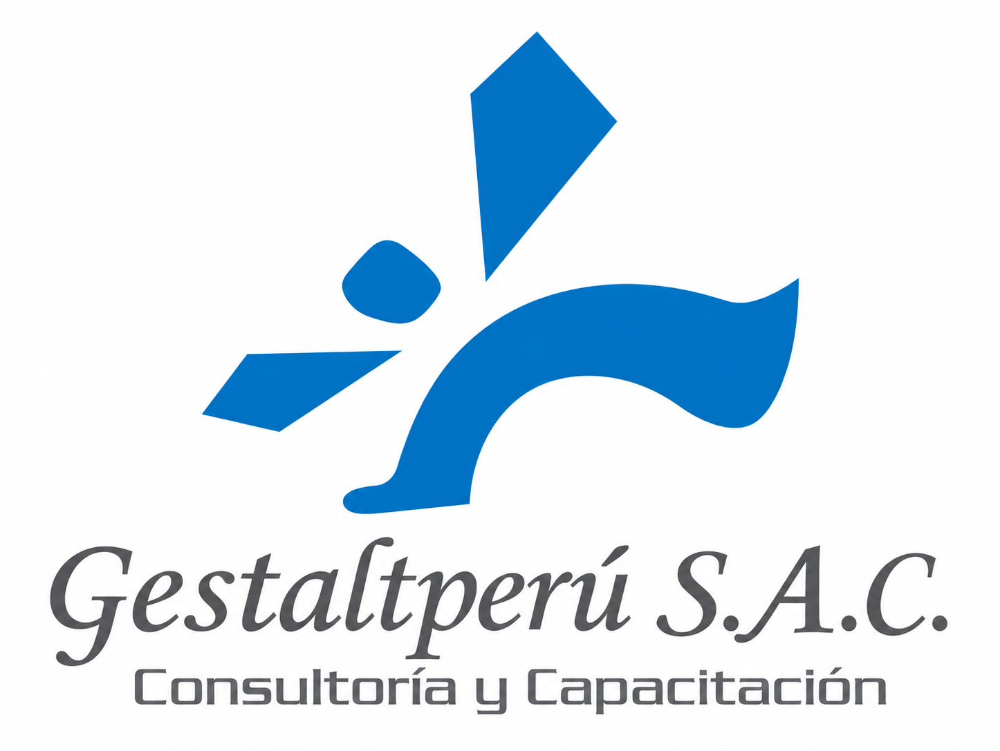

Detenernos
Hacer espacio. Llegar al presente.
PERSONAS · ARTE · COMUNIDAD
Experiencias de arte y expresión para una vida más humana.
Conoce nuestras experiencias →ARTE · EXPRESIÓN · BIENESTAR

VIVIMOS HACIENDO
Trabajamos. Respondemos. Resolvemos. Cumplimos. Y seguimos.
Entre responsabilidades, pendientes y rutinas, también necesitamos un momento para detenernos.

EL ARTE TAMBIÉN ES UNA PAUSA
Creamos experiencias donde el arte se convierte en un espacio para expresarnos, explorar, liberar tensiones y conectar.
No necesitas experiencia. Solo necesitas darte permiso para crear.

CINCO MOMENTOS · UNA EXPERIENCIA
Hacer espacio. Llegar al presente.
Descubrir. Dejarnos sorprender.
Dar forma. Expresar lo que somos.
Encontrarnos. Crear comunidad.
Integrar lo vivido. Llevarlo a la vida.
NUESTRA ESENCIA

Movimiento · Danza · Presencia

Artes visuales · Materiales · Color

Audiovisual · Imagen · Palabra
EXPERIENCIAS
Experiencias para reconectar con nosotros mismos a través de la creación.
Propuestas que despiertan imaginación, curiosidad y expresión.
Procesos creativos para compartir, colaborar y fortalecer vínculos.
Movimiento, fotografía, teatro, escritura, artes visuales, audiovisual y más.
PARA QUIÉN
Un espacio para detenerte, explorar y crear.
Crear también une.
Comunidades más humanas.
El arte como encuentro.
VOCES DE LA EXPERIENCIA
“Por un momento dejamos de ser compañeros de trabajo y volvimos a ser personas.”
Participante · Experiencia Arte Libre“Crear también puede abrir una conversación que no sabíamos cómo empezar.”
Participante · Experiencia Arte Libre“Nos encontramos desde otro lugar.”
Participante · Experiencia Arte LibreALIANZAS

Consultoría y Capacitación. Una alianza profesional que amplía nuestra mirada sobre el bienestar y el desarrollo humano.
VOLVER A CREAR
Quizá no necesitas hacer más. Quizá necesitas detenerte un momento. Explorar. Crear. Compartir. Volver a ti.
Quiero hacer una pausa →